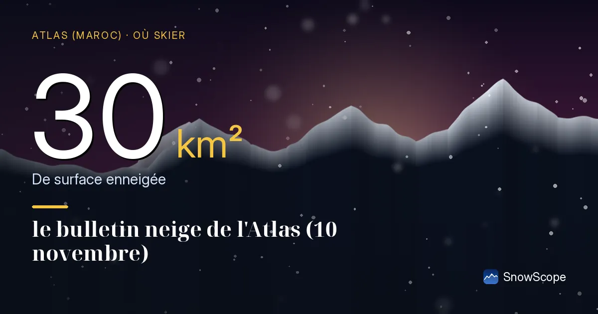

30 km² de surface enneigée : le bulletin neige de l'Atlas (10 novembre)
La couverture neigeuse de l'Atlas a diminué de moitié en deux jours. Au 10 novembre, SnowScope montre seulement 30 km² de terrain blanc sur toute la chaîne, avec l'accumulation la plus profonde atteignant seulement 8 cm sur les plus hauts sommets. Les trois stations de ski—Habri, Michlifen et Oukaïmeden—sont complètement dénudées sur leurs pentes.
Consultez les prévisions neige en temps réel pour Habri sur l'application SnowScopeHauteurs de neige, alertes poudreuse et carte 3D, gratuitement.
Ce que la carte de neige montre aujourd'hui
La neige n'existe que au-dessus de 3 800 m environ, où l'air reste assez froid pour empêcher la fonte. Sous cette altitude, l'Atlas est marron et dénudé. Le pic d'Oukaïmeden à 3 258 m se situe juste à l'intérieur de la zone de neige sur sa plus haute crête, mais ses pentes ne disposent d'aucune épaisseur skiable. Habri (2 108 m) et Michlifen (2 070 m) sont bien trop bas pour retenir de la neige dans le régime chaud actuel.
L'histoire des 48 dernières heures est une perte rapide. Le 8 novembre, la région tenait 70 km² de terrain enneigé. Cela a rétréci à 40 km² le 9 novembre, et à 30 km² aujourd'hui. Le niveau de congélation à Oukaïmeden varie entre 3 800 m et 4 260 m, ce qui signifie qu'au sommet, les températures de l'air tournent autour du point de congélation. La neige de début de saison dans l'Atlas est fragile, et la chaleur automnale l'efface rapidement.
| Station | Hauteur de neige | Neige fraîche, 72 h | Attendu, jours suivants | Sommet |
|---|---|---|---|---|
| Habri | 0 cm | 0 cm | 0 cm | 2 108 m |
| Michlifen | 0 cm | 0 cm | 0 cm | 2 070 m |
| Oukaïmeden | 0 cm | 0 cm | 0 cm | 3 258 m |

Pourquoi les stations sont dénudées en ce moment
Novembre est la mauvaise saison pour la neige à ces altitudes. Les stations de ski de l'Atlas dépendent de deux choses : une altitude suffisante pour rester froide et une tempête assez froide pour apporter de la neige au lieu de pluie. Aucune de ces conditions n'est remplie aujourd'hui. Habri et Michlifen, en dessous de 2 110 m, auraient besoin d'un système d'intensité hivernale pour générer une quelconque accumulation. Oukaïmeden, à 3 258 m, a l'avantage de l'altitude, mais les prévisions actuelles ne montrent aucune précipitation au cours des trois prochains jours.
Le moment compte aussi. Début novembre marque la transition entre l'automne et l'hiver. Les pics à haute altitude reçoivent occasionnellement des impulsions neigeuses précoces—comme cela s'est produit ici le 8 novembre—mais ces arrivées sont minces et sujettes à une fonte rapide. Le sol est encore chaud de l'été, et les masses d'air se déplaçant sur l'Afrique du Nord ne sont pas encore assez stables pour maintenir un froid profond. Ce sont les conditions qui font de la neige de début de saison dans l'Atlas une visite brève, pas une fondation pour la saison de ski.
Ce qui se passe ensuite
Les prévisions pour les 11 à 13 novembre montrent un rétrécissement continu. SnowScope prédit 20 km² de terrain enneigé le 11 et le 12 novembre, puis une chute à seulement 10 km² le 13 novembre. Aucune nouvelle neige n'est attendue dans aucune station au cours de cette période. La neige qui reste continuera à s'amincir alors que le niveau de congélation monte pendant la journée et que la fonte s'accélère sur les pentes orientées vers le sud.
Oukaïmeden est l'endroit à surveiller quand la prochaine tempête hivernale arrive. Ses remontées atteignent une altitude suffisante pour que les systèmes plus froids fournissent de la neige au lieu de pluie. Habri et Michlifen auront besoin d'un coup de froid prolongé—le type qui n'arrive souvent qu'en fin novembre ou décembre—avant de pouvoir constituer une base. Jusque-là, ils restent secs.
Comment cette saison se compare avec le passé
Un Atlas dénudé le 10 novembre n'est pas inhabituel. À 1 970 m près de Michlifen, l'épaisseur de neige moyenne à cette date au cours des 46 derniers hivers était 0 cm. À Oukaïmeden, mesurée à 2 929 m, l'épaisseur typique était aussi 0 cm. Dans 33 des 46 hivers passés, il n'y avait pas de neige mesurable à la station à cette date.
Ce qui est différent maintenant, c'est la vitesse du changement. Le fait que la neige soit arrivée soudainement il y a deux jours, puis ait fondu presque aussi vite. Ce régime—une brève impulsion précoce suivie d'une perte rapide—est typique de novembre dans l'Atlas, quand les systèmes météorologiques apportent de l'humidité mais manquent du froid soutenu nécessaire pour construire un manteau stable. La neige hivernale dans l'Atlas arrive plus tard, généralement à partir de décembre.
À quoi s'attendre en planifiant un voyage
Si vous pensez visiter une station de l'Atlas au cours de la prochaine semaine, ne vous attendez pas à skier. Aucune neige n'est prévue dans aucune altitude avant le 13 novembre. Même si de la neige apparaît sur la carte SnowScope sur les hauts pics, cela signifie que les roches et l'herbe sont à peine cachées sous une fine couche. Le terrain n'est pas sûr et la couverture n'est pas skiable.
Regardez la carte attentivement après le 13 novembre. Quand une tempête plus froide arrive—et elle arrivera, une fois que le régime hivernal s'établit—Oukaïmeden sera le premier à devenir blanc sur ses pentes supérieures. Habri et Michlifen auront besoin d'un système assez puissant pour apporter de l'air glacial jusqu'à 2 000 m. Cela n'arrive pas souvent avant que l'automne tardif soit complètement terminé. Utilisez l'application SnowScope pour obtenir une alerte poudreuse pour Oukaïmeden quand les conditions s'améliorent.
Conseils aux skieurs
- Ne vous rendez pas dans l'Atlas pour skier au cours de la prochaine semaine. Les trois stations sont dénudées et aucune nouvelle neige n'est prévue.
- Même quand de la neige apparaît sur la carte en altitude, souvenez-vous qu'elle est mince et fragile en novembre. Les roches se cachent juste sous la surface sur le terrain exposé.
- Oukaïmeden est la station la mieux positionnée pour la neige de début de saison en raison de son sommet à 3 258 m, mais elle dépend toujours d'une tempête assez froide pour apporter de la neige au lieu de pluie.
- Vérifiez le site officiel de la station pour les dates d'ouverture des remontées et l'état de fonctionnement. La neige sur la carte ne signifie pas que la station fonctionne.
- Définissez une alerte poudreuse dans SnowScope la veille de votre voyage prévu, afin de voir les prévisions les plus récentes et de ne pas vous rendre sur des pentes fermées.
À propos de ces chiffres
Les hauteurs de neige des stations sont la neige la plus épaisse sur le haut du domaine à la date indiquée ; ce sont des estimations pour une zone, pas une mesure en un point. Les prévisions peuvent changer. Consultez toujours le bulletin d'avalanche officiel avant le hors-piste.
Citer ce bulletin
Pour la recherche, l'enseignement ou la presse : chiffres et graphiques réutilisables librement sous CC BY 4.0 avec cette citation.
SnowScope (2026), 30 km² de surface enneigée : le bulletin neige de l'Atlas (10 novembre), https://snowscope.app/blog/fr/2026/11/atlas-morocco-atlas-snow-check-10-november-2026.html, consulté le 2026-11-10
SnowScope (Atlas Labs). (2026, November 10). 30 km² de surface enneigée : le bulletin neige de l'Atlas (10 novembre). SnowScope snow reports. https://snowscope.app/blog/fr/2026/11/atlas-morocco-atlas-snow-check-10-november-2026.html
BibTeX
@misc{snowscope2026atlasmoroccoatlassnowche,
author = {{SnowScope (Atlas Labs)}},
title = {30 km² de surface enneigée : le bulletin neige de l'Atlas (10 novembre)},
year = {2026},
month = nov,
howpublished = {\url{https://snowscope.app/blog/fr/2026/11/atlas-morocco-atlas-snow-check-10-november-2026.html}},
note = {Published 2026-11-10 12:24 UTC; accessed 2026-11-10}
}· CC BY 4.0 · Méthodes, données et outils →
Habri : neige et température selon l'altitude, cet hiver vs l'hiver dernier (outils) →
Suivre Habri
Gratuit : un message quand la neige arrive, et la météo chaque matin.
Autres bulletins neige

À l'altitude d'Oukaïmeden, notre série de 46 hivers montre 12 % de jours de neige en moins ; plus bas, le signal se perd. Ce que l'on sait.

Le 15 décembre à Michlifen, 89 % des hivers sont presque sans neige. Les meilleures chances arrivent après une tempête, pas selon le calendrier. Données du 13 novembre 2026.

Le 15 décembre, Oukaïmeden mi-montagne affiche 16 cm contre 89 cm à Val Thorens. Nous avons vérifié les tarifs des remontées. Données du 13 novembre 2026.